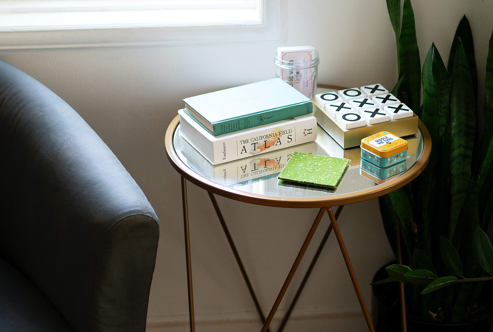

Tic Tac Toe
It's a classic, not much explanation is needed here. This exe file has a beautiful interface and smooth working with absolutely no bugs. Made using Python
Here's the code for beginners who wanna try it as well :
def display_board(board):
# ASCII art to display the tic-tac-toe board
print(f' {board[0]} | {board[1]} | {board[2]} ')
print('-----------')
print(f' {board[3]} | {board[4]} | {board[5]} ')
print('-----------')
print(f' {board[6]} | {board[7]} | {board[8]} ')
def player1_move(board):
# Prompt the player for their next move
move = int(input('Enter your move (1-9): '))
# Update the board with the player's move
board[move - 1] = 'X'
def player2_move(board):
# Prompt the player for their next move
move = int(input('Enter your move (1-9): '))
# Update the board with the player's move
board[move - 1] = '0'
def check_win(board):
# Check for a horizontal win
if board[0] == board[1] == board[2] and board[0] != ' ':
return True
if board[3] == board[4] == board[5] and board[3] != ' ':
return True
if board[6] == board[7] == board[8] and board[6] != ' ':
return True
# Check for a vertical win
if board[0] == board[3] == board[6] and board[0] != ' ':
return True
if board[1] == board[4] == board[7] and board[1] != ' ':
return True
if board[2] == board[5] == board[8] and board[2] != ' ':
return True
# Check for a diagonal win
if board[0] == board[4] == board[8] and board[0] != ' ':
return True
if board[2] == board[4] == board[6] and board[2] != ' ':
return True
# No win
return False
def play_game():
# Initialize the board
board = [' '] * 9
# Game loop
while True:
# Display the board
display_board(board)
# Player move
player1_move(board)
# Check for a win
if check_win(board):
print('Player 1 win!')
break
# Computer move
player2_move(board)
# Check for a win
if check_win(board):
print('Player 2 wins!')
break
# Start the game
play_game()
Just paste it in your compiler and have fun!